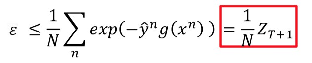
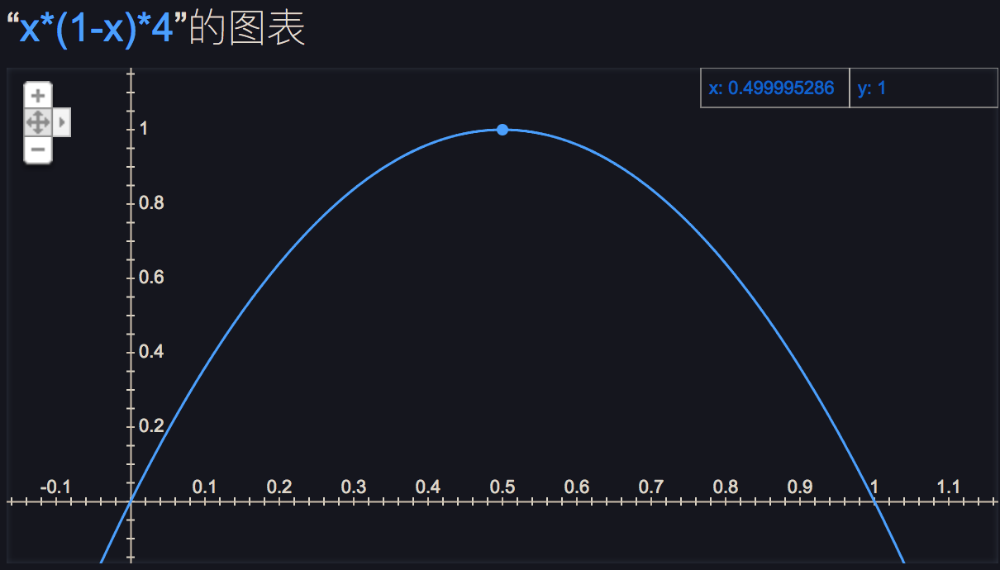
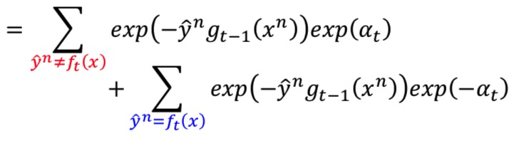

Bagging
『复杂模型』的特点是Bias较小、Variance较大，容易Overfit。
Bagging的原理就是：通过将多个『复杂模型』求平均，来降低Variance。
做法是：
- 训练阶段。在包含
N个样本的样本集中，做多次重采样，每次采n个； - 测试阶段。对多个模型的结果求平均或者投票。
Random Forest
Descision Tree
只要决策树的深度没有限制，很容易训练出一个错误率为0的决策树模型。但是存在过拟合的缺点。
Random Forest
随机森林是基于决策树的Bagging，过程如下：
- 在包含
N个样本的样本集中，通过重采样的方式采n个样本。 - 对于每次采样，从
M个特征中随机选择m个特征（m<<M），在这个样本集上训练一个决策树。 - 重复
K次，产生K个决策树。 - 通过投票的方式，进行预测。
两个『随机性』
随机森林中引入的两个『随机性』：一个是重采样，另一个是随机选择特征。
这两个『随机性』使随机森林不容易过拟合，并且具有很好的抗噪能力（比如：对缺省值不敏感）。
两个影响因素
随机森林的错误率与两个因素有关：
- 森林中任意两棵树的相关性：相关性越小，错误率越小；
- 森林中每棵树的分类能力：分类能力越强，错误率越小。
减小特征选择个数m的大小，会减小树的相关性，同时减小分类能力。增加m，相关性增加，分类能力增加。所以关键问题是如何选择最优的m，这也是随机森林位移的一个参数。
Out-of-bag（OOB）
如何选择最优的m，通过oob error来衡量。OOB就是每次没有被采样的样本集合。
随机森林的一个重要优点是，不需要进行交叉验证，或者不需要用一个独立的测试集来获得误差的无偏估计。它可以在内部进行评估，也就是在生成的过程中在OOB上对误差进行无偏估计。
特征选择
基于OOB误差
对某个特征X的重要性，计算步骤如下：
- 对每一棵决策树，计算
OOB误差，记为errOOB1. - 随机对
OOB中所有样本的特征X加入噪声干扰，再次计算OOB误差，记为errOOB2。 - 假设森林中有
n棵树，则特征X的重要性为∑（errOOB2-errOOB1）/ n。
这个数值之所以能够说明特征的重要性是因为，如果加入随机噪声后，袋外数据准确率大幅度下降（即errOOB2上升），说明这个特征对于样本的预测结果有很大影响，进而说明重要程度比较高。
基于Gini指数
Boosting
Boosting将多个『弱模型』进行组合，得到一个强分类器。
理论前提：如果一个分类器的错误率小于0.5，经过Boosting后，它就能得到一个错误率为0的分类器。
对于二分类而言，我们总是能找到一个$\varepsilon < 0.5$的分类器。因为如果$\varepsilon > 0.5$，只需要将预测结果翻转，就能使$\varepsilon < 0.5$了。
Boosting的框架：
- 得到第一个弱分类器$f_1(x)$
- 找到另一个分类器$f_2(x)$去辅助$f_1(x)$。$f_2(x)$起到对$f_1(x)$弥补的作用。
- 按照以上方法，依次得到
k分类器$f_3(x), f_4(x)$…$f_k(x)$
备注：
- Bagging的每个子分类器都是强分类器；Boosting的是弱分类器。
- Bagging的分类器是无序的；Boosting的则是有序的。
在上一个分类器的基础上，如何得到不同的分类器？：制造不同的训练数据集。
具体方法：
- 重采样（也可以理解成改变样本的权重）
- 改变每个样本的权重
- 在改变权重的基础上，也要响应地修改损失函数.
AdaBoosting
AdaBoosting的原理是通过改变数据的分布，来使上次被分错的样本被分对。
具体做法是：根据模型的准确率和样本是否被分对，来修改样本的权重。如果某个样本被分错，则增加该样本的权重；否则降低该样本的权重。
假设：$f_1(x)$的错误率为：$\varepsilon_1$
$$\varepsilon_1 = \frac {\sum_n u_1^n \delta(f_1(x^n) \neq \hat y^n)} {Z_1}$$
其中，$u_1$为样本的权重，$Z_1$是权重的和，$Z_1=\sum_n u_1^n$
为了使$f_2(x)$对$f_1(x)$起到『互补』的作用，我们要增加分错的样本的权重。
同时，更新权重会使$f_1(x)$的错误率上升。上升到什么程度呢？最多达到$\varepsilon_1 = 0.5$，也就是：
$$\frac {\sum_n u_2^n \delta(f_1(x^n) \neq \hat y^n)} {Z_2} = 0.5$$
更新权重后，训练得到$f_2(x)$.
举个例子，如下图：
- 第一轮，每个样本的权重都为
1，$f_1(x)$的错误率$\varepsilon_1=0.25$。 - 更新权重后，$f_1(x)$的错误率变为$\varepsilon_1=0.5$，$f_1(x)$的$\varepsilon_1<0.5$
如何更新权重
分错的样本权重增加，分对的样本权重降低。
设:更新前的权重为$u_1$，更新后的权重为$u_2$
更新前：
更新权重：
更新后，$f_1(x)$的$\varepsilon_1=0.5$：
上式的『分子部分』是分错的部分：
『分母部分』是分错+分对两部分：
也就是：
变换，提取出$d_1$：
$d_1$的平方，就是『分对样本的个数』除以『分错样本的个数』：
所以，可以求出$d_1$，大于1：
设：$\alpha = \ln d$，则权重更新时乘以$exp(\alpha)$或$exp(-\alpha)$，使表达式更简洁。
AdaBoost的步骤
- 训练
T个弱分类器： - 将
T个弱分类器进行加权平均:
对于每个弱分类器而言，错误率越低，$\alpha$越大，表示这个弱分类器的权重更大。这是合情合理的。
最终分类器的错误率
最终的分类器为：
$$ H(x) = sign(\sum_{t-1}^T \alpha_t f_t(x) $$
错误率为：
$$ \varepsilon = \frac 1 N \sum \delta(H(x^n) \neq \hat y^n)$$
令，$g(x) = \sum_{t-1}^T \alpha_t f_t(x)$
那么，$$ \varepsilon = \frac 1 N \sum \delta(\hat y^n g(x^n) < 0) $$
错误率的上限
上式错误率有个上限，如下图：
$$ \varepsilon \le \frac 1 N \sum exp(-\hat y^n g(x^n)) $$
错误率的上限等于样本权重的均值
样本的权重，可以通过递推公式求出：
将求和操作变换到exp的指数上：
于是，可以得到错误率的上限：

样本权重的和随着迭代次数递减
样本权重的和，可以通过递推公式求出：
左侧为分错的样本，右侧为分对的样本。
$Z_{t}$可以由$Z_{t-1}$求出：
由于$Z_{1}=N$，那么$Z_{T+1}$为：
也就是，
如下图，$4 x (1-x)$在$x=0.5$时取得最大值1，也就是$2\sqrt{ \epsilon (1-\epsilon)} < 1$

所以，错误率会随着迭代次数的增加，越来越小。
一个重要特性
随着弱分类器的个数的增加，尽管training error已经为0，但是testing error依然能够继续降低。
分析：
定义一个Margin，$Margin = \hat y g(x)$，其中$g(x) = \sum_{t=1}^T \alpha_t f_t(x)$.
随着弱分类器个数的增加，Margin随之增加，因此能继续降低testing error。
这个Margin有点类似SVM的效果。
如下图，AdaBoost的training error为绿色的线，当所有的$\hat y g(x) > 0$时，training error为0.
但是，AdaBoost的training error有个上限，红色的曲线，随着$\hat y g(x)$增加，这个上限任然继续降低。这就是testing error继续降低的原因。
同时，我们也可以看到SVM与Logistic Regression的区别，因为SVM只根据支持向量来计算Margin，LR则是根据所有样本来计算Margin。
更多资料
- Introduction of Adaboost:
• Freund; Schapire (1999). “A Short Introduction to Boosting“ - Multiclass/Regression
• Y. Freund, R. Schapire, “A Decision-Theoretic Generalization of on-Line
Learning and an Application to Boosting”, 1995.
• Robert E. Schapire and Yoram Singer. Improved boosting algorithms using confidence-rated predictions. In Proceedings of the Eleventh Annual Conference on Computational Learning Theory, pages 80–91, 1998. - Gentle Boost
• Schapire, Robert; Singer, Yoram (1999). “Improved Boosting Algorithms Using Confidence-rated Predictions”.
Gradient Boosting
Boosting方法的一般表达式
每次迭代，我们希望找到一个$f_t(x)$和$\alpha_t$与$g_{t-1}(x)$互补。
我们希望$g(x)$与$\hat y$越接近越好，所以我们定义一下$g(x)$的学习目标：
$$L(g)=\sum l(\hat y^n, g(x^n)) = \sum exp(-\hat y^n g(x^n)）) $$
Gradient Boosting
如果我们已经得到了$g_{t-1}(x)$，下一步如何更新$g(x)$？使用『梯度下降法』
从梯度下降的角度，$g(x)$的更新方式如下：
上述『Boosting的一般表达式』中，从Boosting的角度，$g(x)$的更新方式是$g_t(x)=g_{t-1}(x) + \alpha_t f_t(x)$
两者等价，所以『损失函数对$g(x)$的偏导的反方向』应该与$\alpha_t f_t(x)$的『方向相同』。
我们计算一下上述损失函数对$g(x)$的偏导的反方向：
于是，我们的目标变成了使它们的方向相同：
等价于，
上述最大化目标函数的式子可以看成，对于每一笔训练样本，都使$\hat y^n$与$f_t(x^n)$同号；并且左侧部分是训练样本的权重。
刚好这里权重的表达式与AdaBoost中权重的表达式一致：
所以，在AdaBoost中，每次迭代过程中产生的弱分类器$f_t(x)$，添加到$g_t(x)$中之后，就像梯度下降一样，会使损失函数$\sum exp(-\hat y^n g(x^n)）$越来越小，使更多的$\hat y^n$与$f_t(x^n)$同号。
上述是对$f_t(x)$的解释，那怎么决定$\alpha_t$呢？
固定$f_t(x)$，求损失函数对$\alpha_t$的偏导：
上式：
- 左侧部分为样本的权重：
- 右侧部分$exp(-\hat y^n \alpha_t f_t(x))$拆成『分对』和『分错』两部分，偏导继续化简为：

令损失函数对$\alpha_t$的偏导=0，可以得到$\alpha_t$的结果与AdaBoost的一致：
小结：
从Gradient Boosting的角度考虑Boosting方法的话，我们可以选择不同的目标函数，从而推出不一样的Boosting方法。
Stacking
投票
对多个分类器的结果进行投票，选择『票数最多』的那个结果作为最终的结果。
Stacking
- 训练数据分为两部分。
- 把多个分类器的结果作为一个新的特征。
在另外一部分训练数据集上，对这个新的特征，训练一个分类器。
#总结
- Bagging：每个子分类器都是强分类器，随机森林通过在样本集和特征集上进行采样，达到抑制过拟合的效果。
- 随机森林可以用OOB误差来代替交叉验证。
- Boosting：每个子分类器都是弱分类器，多个弱分类器组合成一个强分类器。
- Bagging的分类器是无序的；Boosting的则是有序的。
- AdaBoost算法可以看出是Gradient Boost的特殊形式（其中一种损失函数），每次新生成的一个弱分类器都像梯度下降法一样，添加到最终的分类器上之后，使最终的分类器更强。